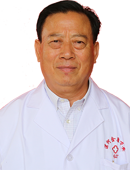
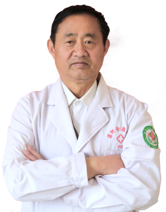
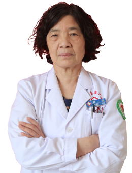

我院不断汇聚诊疗领域精英，构建以中西结合为特色的治疗与健康管理体系的优势学科群，开展了大量疾病的探索与临床研究工作。>>>咨询今日在线专家<<<
以下是院内部分专家简介，更多专家信息请到院了解！-

叶秀民 ▏康复科主任 副主任医师
发表国家级、省级学术论文十余篇
漯河万安康复医院首席专家
从事临床工作45年
漯河万安康复医院首席专家，毕业于华北理工大学医疗系，原部队军医、院长。先后在郑大一附院、省人民医院、北京协和医院、北京宏强国际医疗中心进修学习。
从事临床工作45年，发表国家级、省级论文十余篇。擅长普外、血管瘤、痤疮、颈突、腰椎间盘突出、膨出、膝关节骨性关节炎、膝关节腔积液、肩周炎、腱鞘炎、带状疱疹后遗症、强直性脊柱炎、股骨头坏死、痛风、面瘫、脑中风后遗症、小针刀微创治疗等疑难杂症的治疗，享有盛誉。
-

蔡文选 ▏副主任医师
发表省级学术论文3篇
从医40余载
从医40余载，擅长治疗各种心血管病、脑血管病、高血压、急慢性支气管炎、支气管哮喘、肺气肿、失眠、多梦、焦虑、各种胃肠道疾病、糖尿病及疑难杂症有丰富的临床经验。
-

魏留 ▏主任医师
省著名三甲医院临床工作40余载
发表国家级论文多篇
中心医院退休专家
1970年毕业于河南医科大学医疗系，漯河市中心医院退休专家,从事内科临床工作40余载，具有广博的医学知识和丰富临床经验，熟练地掌握呼吸科、心内科、脑血管科常见病、多发病和疑难病诊断和治疗，特别是对肺心病、高血压、脑梗塞、高脂血症、糖尿病等各种急危重心脑血管疾病抢救工作有高深的造诣，受到漯河及周边地区患者的好评。
-

叶森 ▏主治医师
1983年本科毕业后工作于河南省第二医院。
从事中医的临床治疗与科研工作工作30余年
漯河第二人民医院退休专家，从事中医内科30余年，擅长用中医方药 理论指导临床实践，辩证论治。对于内科常见病、多发病和疑难杂症能熟练的进行处理，并积累了丰富的经验，得到了患者的一致好评。
-

崔付然 ▏副主任医师
获地市级科研成果奖二等奖一项、三等奖两项
从事外科工作五十余年
大学毕业后从事临床外科工作五十余年，曾先后在湖北省武汉市二医院、三医院进修学习普外科，在河南省郑州大学第一附属医院进修学习神经外科、泌尿外科及乳腺外科，对普外科、神经外科、泌尿外科、乳腺外科常见病、多发病的诊治有丰富的临床经验。发表论文6篇，地市级科技成果奖二等奖一项，三等奖二项。
-

万素华 ▏副院长 副主任医师
临床工作25年
曾研修于河南医科大学附属医院
从事临床工作20余年，曾研修于河南医科大学附属医院心内科公共卫生临床营养专业。擅长心内科、脑血管科等常见病、多发病诊断治疗。对老年病、慢性病健康管理、营养咨询、营养教育．营养状况评价及特殊治疗膳食的食谱制定有丰富的临床经验。